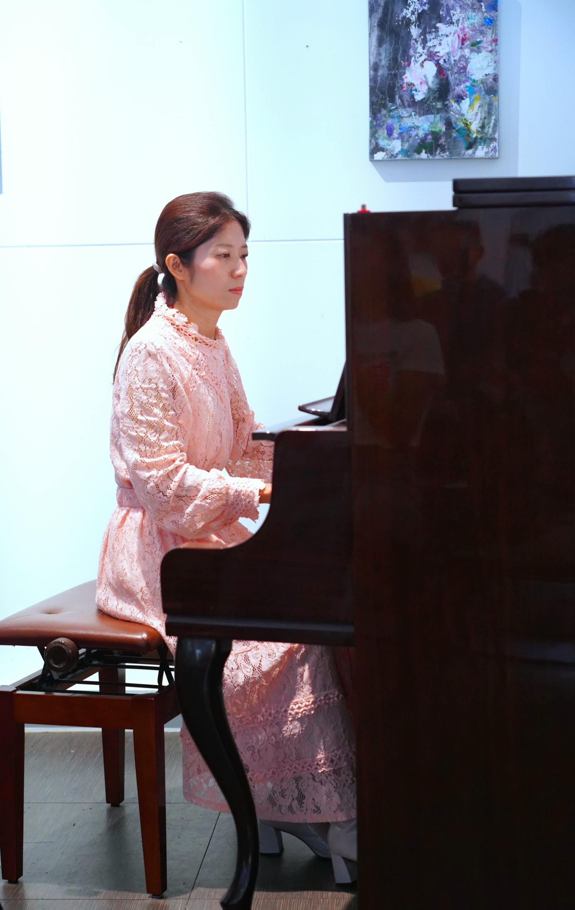

STORY
音樂之路與教育理念
從興趣到專業，從舞台到教學，佩佩老師用25年的堅持與熱情，影響了無數學生的音樂人生。

🎹 從小與音樂為伴
佩佩老師從小就展現對音樂的天賦與熱愛。從第一次接觸大提琴開始，就深深著迷於這項樂器的深沉音色。25年來，不間斷的練習與演出，讓音樂成為她生命中最重要的一部分。

🎭 2,000+場的舞台經驗
從小型音樂廳到大型活動舞台，從獨奏到室內樂團，佩佩老師累積了豐富的演出經驗。每一場演出都是獨特的體驗，也讓她更了解如何用音樂觸動人心。

精彩活動演出

與音樂同好合影

專業資格認證